<html><head><title>Orthopaedics</title><style>body{font-family:sans-serif;padding:20px;background:#f4f4f9}.chapter{background:white;padding:20px;margin-bottom:30px}.q{border-bottom:1px solid #ddd;padding:15px}.correct{background:#d4edda}</style></head><body><h1>Orthopaedics</h1><div class='chapter'><h2>Benign Tumors Of Bone</h2><div class='q'><p><b>Q28:</b>   „       “Œ--          .      ? 456 </p><div class=''>a) ™  </div><div class='correct'>b) ƒ  </div><div class=''>c)      </div><div class=''>d)    </div><p><i>             ( ‘   )    „    /†    ( ...</i></p></div><div class='q'><p><b>Q29:</b>                    ? Answer Key Question No. Correct Option 457 Detailed Explanations </p><br><div class=''>a) ç        </div><div class='correct'>b)            </div><div class=''>c)            ‘</div><div class=''>d)       </div><p><i> ƒ             . ƒ               ...</i></p></div></div><div class='chapter'><h2>Malignant Tumors of Bone</h2><div class='q'><p><b>Q20:</b>  ‡ –- -                          .  -          .               ?   š- -                . —  ’-                  Å…š   . —      .              ?                            ? 454               ' ? 484 </p>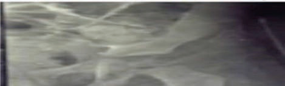<br><br><br>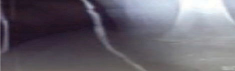<br><br><div class=''>a)  </div><div class=''>b)  </div><div class='correct'>c) • </div><div class=''>d)   </div><p><i>           ê-“…                ...</i></p></div><div class='q'><p><b>Q21:</b>  ‡       Ž™•—        .      Š         “……%   Ń    „…%.            . Ž              .         ? 159   ƒ- -                      . Å Å            .      ?                     ?  --     '    .                ? </p><div class=''>a) ‚      </div><div class='correct'>b) ”‚</div><div class=''>c) ç </div><div class=''>d) Ž     </div><p><i>       ,      Åçƒ              Œƒ ...</i></p></div><div class='q'><p><b>Q22:</b>                    ? Answer Key Question No. Correct Option 160 Detailed Explanations  218 Å ’-                      .                ?                       .                   ?  “è--       †.    ,  ‚       .            .           ? </p><div class=''>a) †     </div><div class=''>b)     </div><div class='correct'>c) ‡ </div><div class=''>d) ˆ ‚ </div><p><i> ‹                . 176 Injuries of knee, leg and foot  ...</i></p></div><div class='q'><p><b>Q23:</b>              è            .         ? Answer Key Question No. Correct Option 219 Detailed Explanations              ' ?                ‚ ? </p>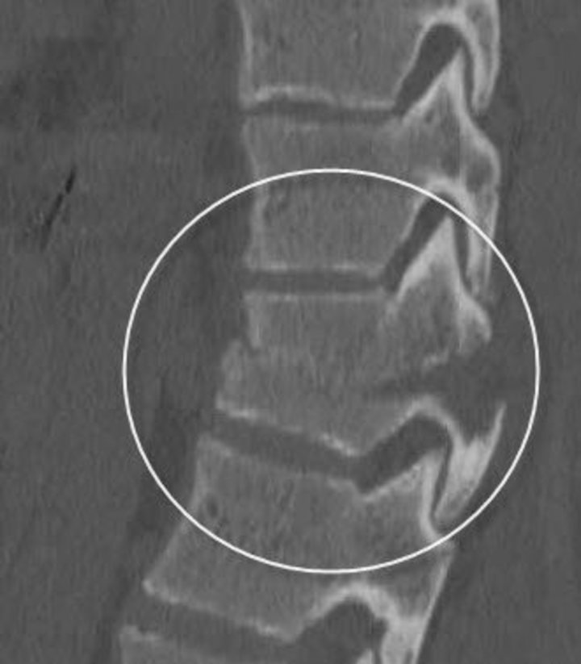<br><div class=''>a)  (;)</div><div class='correct'>b)  (…;–)</div><div class=''>c)  </div><div class=''>d) ‹ </div><p><i> –           ‹         . ç    ,  ...</i></p></div><div class='q'><p><b>Q24:</b>                   ‘  ? 455  ç   ƒ-        †  ‚    †   .            ? 485 </p><div class=''>a)   </div><div class=''>b)    </div><div class=''>c) ‡  </div><div class='correct'>d)   </div><p><i> –   ‘            . –        ...</i></p></div><div class='q'><p><b>Q25:</b>                 ?                ‚         ? </p><br>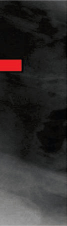<br><br><div class='correct'>a) </div><div class=''>b)  </div><div class=''>c) — </div><div class=''>d) ‡ </div><p><i>     ,           .       : • „    • ‰...</i></p></div><div class='q'><p><b>Q26:</b>               .                        „‚ 茘    .                 ‘       ?                     ? </p><div class=''>a) ‰   </div><div class='correct'>b) ‹   </div><div class=''>c)    </div><div class=''>d)   </div><p><i>             Š      .         ...</i></p></div><div class='q'><p><b>Q27:</b>           .       ,                  .           ‘?        ‚  †       . Ž ƒ-  ‚   .                     ? 486 Answer Key Question No. Correct Option 487 Detailed Explanations </p><div class=''>a) ˆ   </div><div class=''>b) ç   </div><div class=''>c)   </div><div class='correct'>d) ‹       </div><p><i> ƒ    ,                   Š     ...</i></p></div></div><div class='chapter'><h2>Trauma amputations, prosthetics and joint repla...</h2><div class='q'><p><b>Q11:</b>   “--                  Ž‚. ‰  ,                  . Š         .    †  -      ,   Œ        : 8              -  ?           Å  50       …     -                     .                             .          ?         ˆ        Š  ?                   . ƒ              '         .                …         ?                          ? 124        †         †  ?  ‡ ê- -      ç‘‹         -      Œ  . Å              .  -          .                  ?                           Å      . ˆ Å             _____    '   ?      ’-             ” '   . Å                 …     :  …          _____. 240       ‚ ƒ      …   … ‚     ‚    .            ƒ  ‚     ?  …        ,                ?                    ?  Œ--                  . ˆ   ,                      .     ,         ” ƒ.                ? 316   Ž- -             . ‡         .          †  ?                „           ?  Å                      .      ,          -Œ    †-.        ? Answer Key 357 Question No. Correct Option Detailed Explanations           . ‚            .       ?  Å          ,  ,              . ‚-         .     382    ?   - -                - .  ƒ  ,          . ‡       . 397   ƒƒ--             .     ˆ  ,         .    ˆ       ?                            ?                  ‘   .        †                ?                     ? 481                  :                       .                    ? </p><br><br>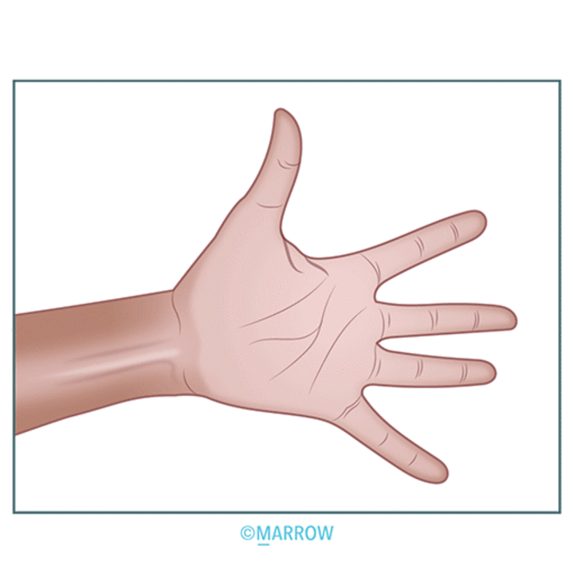<br>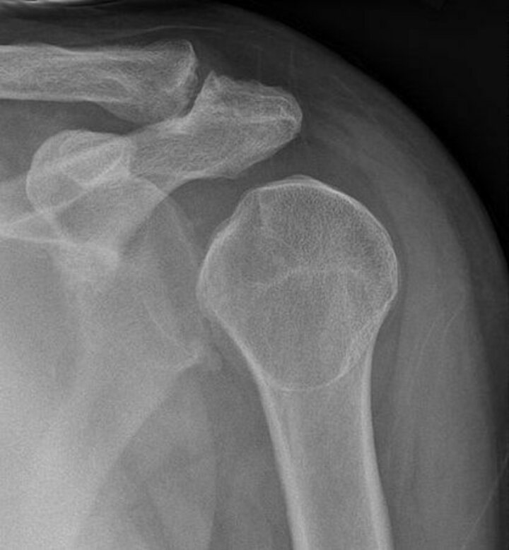<br>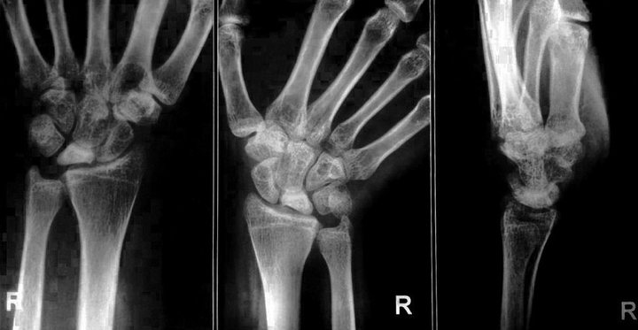<br><br><br><br>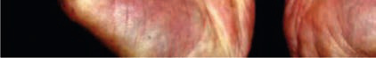<br><br><br>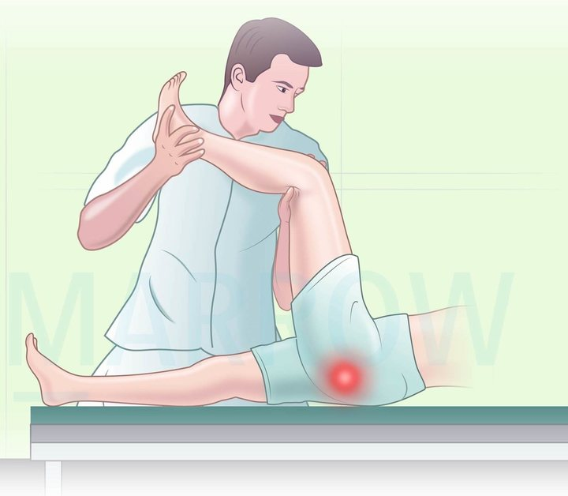<br>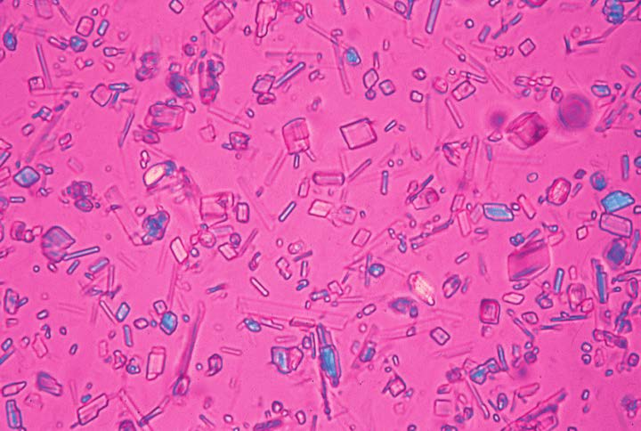<br><br>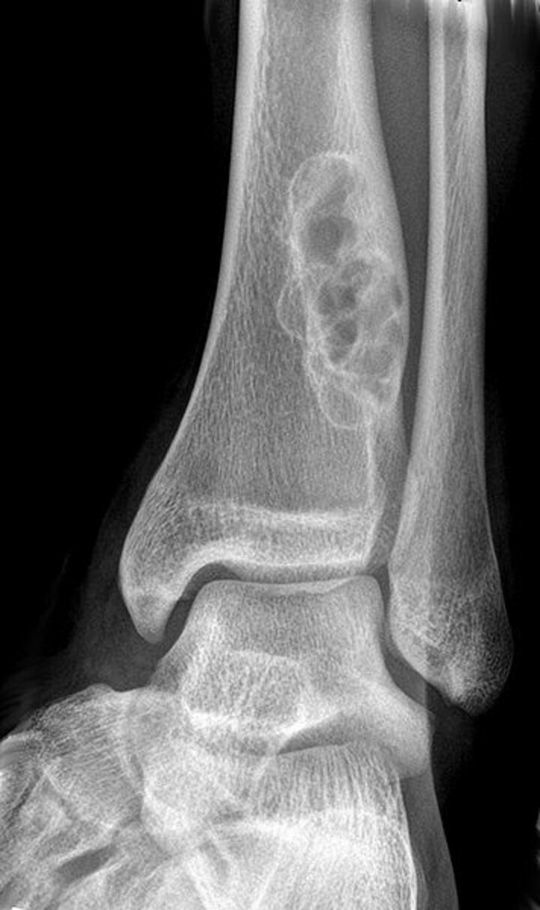<br><br><br><div class=''>a)           </div><div class=''>b)          -            </div><div class=''>c) ˆŽ         </div><div class='correct'>d) ƒ         ˆŽ  Š</div><p><i> ‚         ‚ „„„’  †  -   '       ‰  ...</i></p></div><div class='q'><p><b>Q12:</b>  ‹                     . …                       ?   -               è-    .     -      ? 31  … ‘’--        Å             †  .         . ‰             . “  ,           .              Å … '    .  ”-  Å        .      ?                            .     -             .         ?          .       Š       ŒŒ  . ‚     è   ?   -                 . Š           .          . „       ? 111 Answer Key Question No. Correct Option Detailed Explanations               '  ? Answer Key Question No. Correct Option Detailed Explanations            . ‡ „          '                     .        ? 139 Answer Key Question No. Correct Option Detailed Explanations                      ? 155  ç       ____         . 180    ‘ '  ?                  .       † ,  Å               .           ?                ? Answer Key Question No. Correct Option Detailed Explanations                     .     ‚     ? 255                   ” ?                 . è …  ,         …   ,  …,       ….       †    .                     ?             ”--         .         '      ? Answer Key Question No. Correct Option 317 Detailed Explanations           …    ?  ˆç-                           . Ž-     è   .      ? 340               ? 367  Å „„--    -          . ‰       ‹       .                   . 383   ˆ-               .             ? 398                 † . ç      ”           .         ?  ƒ                     ? 433              ?  ““--         †     . Ž                  .  …  ,            . Ž ƒ-     .      †     ?                 ? 507  ˆ          . 528 </p><br><br><br><br><br><br><br>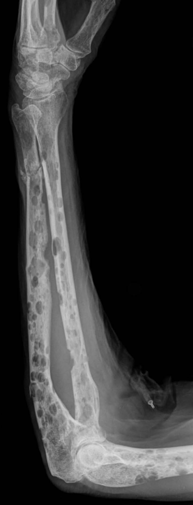<br><div class=''>a)   -   </div><div class='correct'>b) „    </div><div class=''>c) ‰     </div><div class=''>d) ‘    </div><p><i> ˆ            ê    . „         ...</i></p></div><div class='q'><p><b>Q13:</b>      Å                Å    . ‰  ,              . Š      Å                . „             , ‰: 9         -       . †                  .                     ?  … ‘ê--       “„ˆ              Å   . … Å  ”-          .          Å      ? 51  Š            ƒ -†    ? 66    -             ?               ?                   „  Å   ?  Å ‚•-                          .     ? 199           —'      ? 215           … …    ‚ ƒ     ?                        ?  ‹              ? 304 Answer Key Question No. Correct Option Detailed Explanations            Å'  ? Answer Key 329 Question No. Correct Option Detailed Explanations  Œ             ?             † ?  Å ’--            ‘ . ˆ†        . ‚-         .        ?   ’- -                  “  . „ ˆ-            .            . „       .         ?  418  ƒ–--                                 .  ê        ,        ? Answer Key Question No. Correct Option 419 Detailed Explanations  ƒ                ?  ‚      - ,            -    .               ? 451              ?        . 508                    ? </p>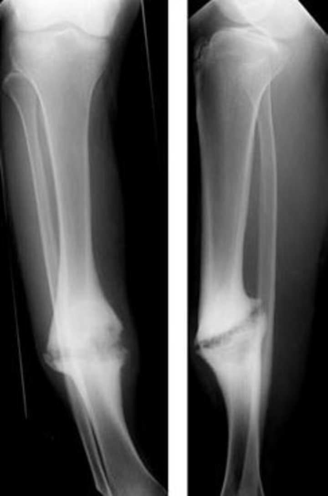<br><br><br><br><br>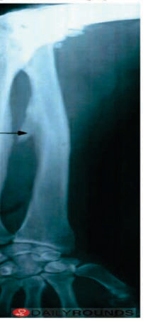<br><br><br>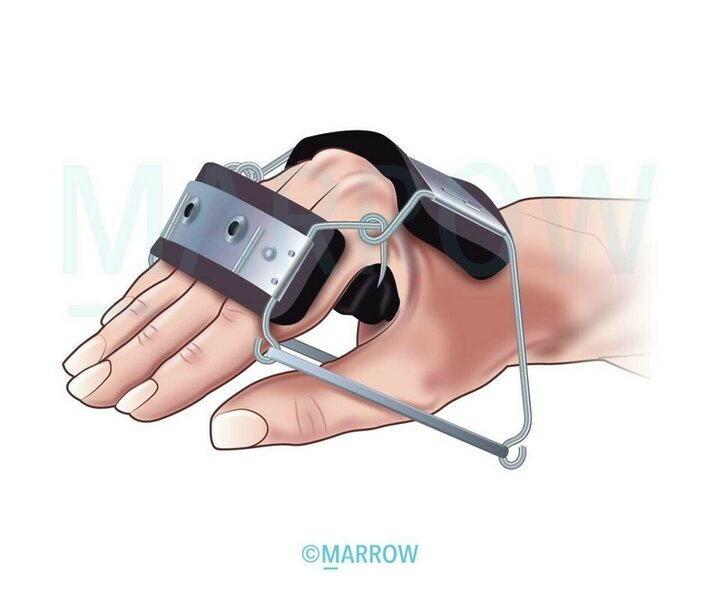<br><br>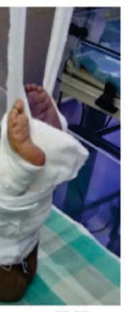<br><br><br><br><div class=''>a) …                </div><div class=''>b) ˆ              </div><div class=''>c) „          </div><div class='correct'>d)                    </div><p><i>       ,           .     ...</i></p></div><div class='q'><p><b>Q14:</b>  „                         ?            -  ? 32  …                .          .             ? 52 Answer Key Question No. Correct Option Detailed Explanations   çç-                               . ƒ  -             .      ?                       .  Å-       . ‚    ? 87  ‡ ê- -              ‘ ‡.          ƒ  .       Š   Š   ,          .          ? 156                      ƒ . ê                       - . …-          Å   .     Å    ?  Å            .           ? Answer Key Question No. Correct Option 200 Detailed Explanations               ?              …  ‚        ?   è- -                      .          . –           .           ? 284                ? 341            † ,      ,           ?                -     ? 384   ”•- -                .                .  ˆ-         .                       ? 399                 .         -      . ‚   ,                       . ƒ      .          ?   ”--                   .  -         .        ?            -        ƒ-? 482                 . Answer Key Question No. Correct Option Detailed Explanations                      ? 529 </p><br><br><br><br><br>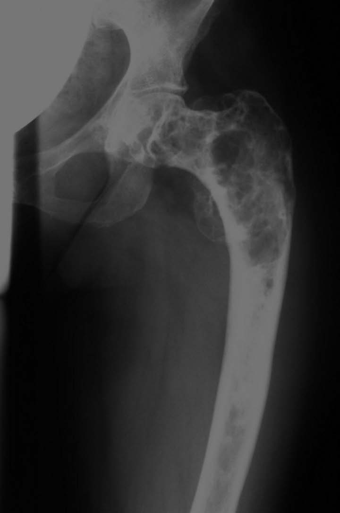<br><div class=''>a) ‹   ê  </div><div class=''>b) è, ‹   Å  </div><div class=''>c) è,ê   ‚  </div><div class='correct'>d) ‹,ê,Å   ‚  </div><p><i>                       (    ...</i></p></div><div class='q'><p><b>Q15:</b>                  , ‰: 10                      -   ?         Ž                _____. 67  ‚           „……  - ?  ‡ „–- -       ˆ             . Å          . -      .             ?           Å    ‘  Å Å. Ž     -   ,  -          .       ? 181      ˆ“             .                   ?        ,      Œ       … ‚ ? Answer Key Question No. Correct Option 256 Detailed Explanations   Ž‰- -                    . ‚                   ?            .          ?               ? Answer Key 368 Question No. Correct Option Detailed Explanations  Å „’--      .  †  ,       . èŠ             .           ?            . „        ƒ      ,                 . „               .       ? Answer Key Question No. Correct Option Detailed Explanations 400                   .            . Ž-         .        434               ?       •                  ‘ ? 452           ‚      .                ?  ’                           .              ? </p><br><br>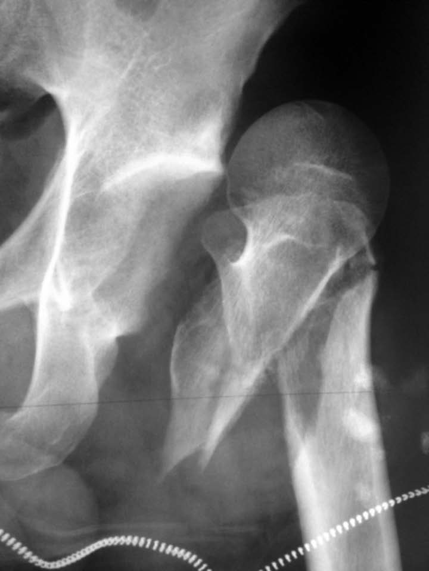<br>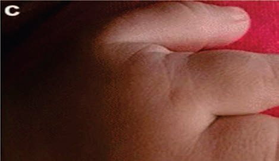<br><br><br><br><div class=''>a) ˆ          </div><div class=''>b) „          </div><div class='correct'>c) …         </div><div class=''>d)              </div><p><i> ‚    ‰  ‰    ‰  ‰. ‚          ‰...</i></p></div><div class='q'><p><b>Q16:</b>   ”--        ‰  ‰       .   -,          -   . Š         .   ,  Å   ê      Å       ?   ““--                   . ê                .       .         ?   ‘’- -                           . Š ‰ ,                     . ƒ  ,              .          ?                 . ç              .      . ‚    ˆ ? 88  ‡ „—- -          -     “ . ç Š   ,         Š   .  -          .     Š ?                 .      ˜   ,                    ?   ˆˆ- -       -              ‰ . ‚            .                . —                      .        ?  Œ           -      ?  Å „’-- Å †            ,     . Š                . Ž                      .      ? 385  ê                      ‚‰Œ.                  ?                – „ -     ?                  ?                      ? </p><br>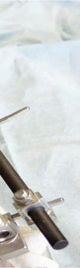<br>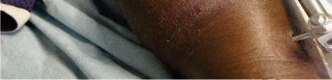<br><br>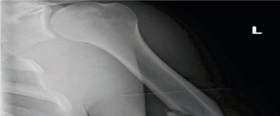<br>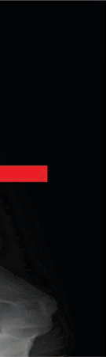<br>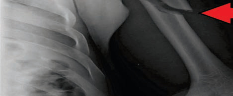<br><br><br><div class=''>a) ƒ     ,      </div><div class='correct'>b) ƒ     ,      </div><div class=''>c) ˆ      ,      </div><div class=''>d) ˆ      ,      </div><p><i> ‚            ‰  ‰           . „ ...</i></p></div><div class='q'><p><b>Q17:</b>   “--                . Š           Å. ‰  ,           . Š        . „          . 11  33  ”ç--             .                     . -    .               ?                     ‰    ?  ˆ               . ç             .           .  Å-          . ‚    ˆ ? 89  157 ‡                     .               -    .                ?                  „           .       Å    ? 182            -   ’   ? 216  …             ,                ?           ‘Œ‰’          .   -          .            ,  ,         .            ? 342  Å „’--            .                  ? Answer Key Question No. Correct Option Detailed Explanations   Šˆ--                                    .         ? 435   èŒ--                         .  -         .     ?                ?  “-      ______ </p><br><br><div class='correct'>a) ƒ               </div><div class=''>b) ƒ  ,            </div><div class=''>c) ƒ  ,   ,           </div><div class=''>d) Ž     </div><p><i> ‚               „ •  .        ...</i></p></div><div class='q'><p><b>Q18:</b>                        .                    ?                    -  ? Answer Key Question No. Correct Option 34 Detailed Explanations                                  .     -         .           …      ? 68            ˆ     . ç Å-      . ‚          ? Answer Key Question No. Correct Option 90 Detailed Explanations              Š        ?                           . ƒ         “        .     Å    ? Answer Key Question No. Correct Option 183 Detailed Explanations                     .                      ?  285  ‰- -                       ‰ . ˜  ,                   . ç    ,         . ‚                            .        ?  ˆÅ--                   .                .               “” .      ?  ê       ‰ '          . ƒ                      ? Answer Key Question No. Correct Option 436 Detailed Explanations                    ? 453  --          ‚    ‚     . Ž ƒ-    ‚    ‚   .           ? 483                             ? 530 </p><br><br><br>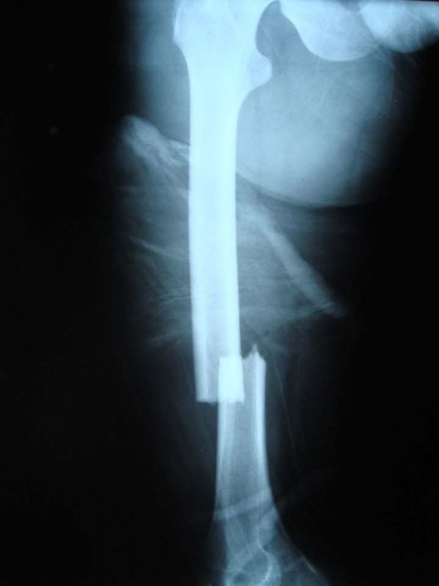<br><br><br><br><div class='correct'>a)  </div><div class=''>b)   </div><div class=''>c)     </div><div class=''>d)      </div><p><i> ‚                    . ’        ...</i></p></div><div class='q'><p><b>Q19:</b>                               .                  ? 12 Answer Key Question No. Correct Option Detailed Explanations                  . ƒ   ‰                .     -         .       ? 69 Answer Key Question No. Correct Option Detailed Explanations  ‡ ƒ•-                                Š   . ç Š   ,               .              .                 ? 158                             . — ’-     .      ? 217   ˆ‰- -              „      .          . ‘        : 286 Answer Key Question No. Correct Option 287 Detailed Explanations  ‘          . 343 Answer Key Question No. Correct Option Detailed Explanations   ‹‹--                         .  -              è.     .         †          . ‰ˆ           ‚.           ?                 . Answer Key Question No. Correct Option 531 Detailed Explanations </p><br><br><br>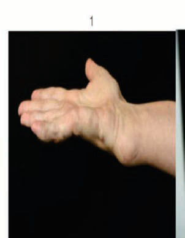<br>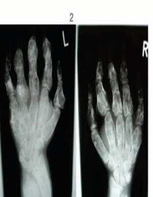<br>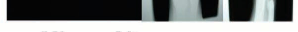<br><br><br><div class=''>a)            </div><div class=''>b) ˆ        </div><div class='correct'>c)              </div><div class=''>d)             </div><p><i> ‚    ‰                    ...</i></p></div></div><div class='chapter'><h2>Sports Injury</h2><div class='q'><p><b>Q1:</b>                   ?   --                 .            . -    .                 ?               ?                ?              ,      -        .              ?                       .                    ?               ?                   ?  -                  ?                       ?                          .   ,                  .            ? a) b) c) d)   --            .  -           .                        ?           ?       ,                ?                 ?                       ?               ?   --                       .                ?                   .       .                  ?                ?       ,                .                     ?                  ?           ?                ?   ,                                 .        ?              ?                      ?        ,                     ?                 ?                       .     . </p><br><br><br>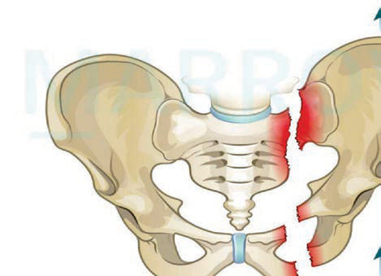<br><br><br><br>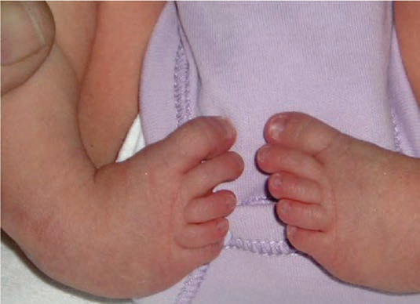<br>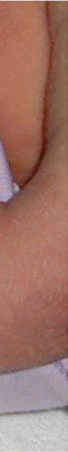<br><br><br><br><br><br><br><div class='correct'>a)     </div><div class=''>b)   '  </div><div class=''>c)   </div><div class=''>d)   '  </div><p><i>                 .     Å     ...</i></p></div><div class='q'><p><b>Q2:</b>                  .               -      ?                         -   ?               .   -                          .            ?                        .   ,           .  Å-         . ‚           ?                   . -              .             . 106  --              . Å           .               ?                    ?                    ?                      ?                              ? d)                            ,   ,    . Å             .         ? b)           ?                 ?                       ?   -       -    ,  ,           .                   .             ?  --                .      -                    .                    ? d)                 ?                         ?                    ?              .         ?  - -        Å     ‚-  -ƒ.„ … .                   ?            ' ?   - -             .            -   ?   --             .  -             .                  .                         ?            ,                    ?               ?      -                .               ? 501               ?              .        ,       '  '          .  ,  Å    . ‚          Å ? 542 </p><div class=''>a)        '   </div><div class=''>b)        </div><div class='correct'>c)           </div><div class=''>d)             Å</div><p><i> ‚    :            ,        ...</i></p></div><div class='q'><p><b>Q3:</b>                     .    Å                . ‚ ƒ-         .                 ? 4  28                        ?                -   ?                    ?   Å-                   . ‚           ˆ       ? 83  „            …                ?  ƒ         „ :   Å- -                  . ‚      ,        . ƒ „  ,       .     ?   -                         .    '           ?  - -                         Å .              .                  ? 177  Å ‚ƒ--                    .      . Å „-       .                         ? 196                         .         ?  236             -  ?  Å- -          ‚ ƒ    ‚     . „-          … ‚ .                 ? 251              ,       .      „   ? 271                               ?  301                         ?  Å--                   . ‚    ,       ,  ƒ,   . -         .          ?  325             ?  337 Å- -       ‚ƒ                      . ‚ „   ,                   .          ?  Å --         ‚      . Å      '       . ƒ           ______. 354  ‰Š- -                   . ‹Œ‡      . ‡        . 364                     '   ' ? a) b) c) d)                    ?  413  ƒ--        - -             „  . -     …             †  . ‡                  ˆ:                         :                      ?           -    ?            . 502                            .                   -     ?  ƒ     '    : </p><br><br><br><div class=''>a)       , „,  „</div><div class='correct'>b)       , „,  „</div><div class=''>c)       , „,  „</div><div class=''>d)       , „,  „</div><p><i> ‚             ,    ,    ƒ-      ...</i></p></div><div class='q'><p><b>Q4:</b>                 , ‰:  †           _____________  … †--             .       ? 47  Å         ‚       ? 63  ‚          ˆ                       ?  „                ? 107  --                       .     ? 121   Å- -                      . ‡     †     .        ? 135                  '         ? 152           Å        ƒ        Å .         „    Å         ?  Å     (Š‹  )             Œ         ç    .            .  „-                          .  …†      .     ?  212                          ?  …                    .     .  Š- -         ‚ ƒ        . ‹ Œ    ,  ‚       ‚    .    ƒ  ?                               .      '  .             ?   „- -              ‰ .                         .          280       . …        .                 ?                †.     ?               ? 313                        ?                  ƒƒ ?  ƒ †-                .     ?             ?  Å        ' . ‚-         .           ? 379                       ? 395   ‰--                     .    ˆ    -     .                  ?                    . ‚   ,       . ƒ                .                 429      ?   --       Å‚                       . ƒ -    .                     ? 446  Å--        ‚     ‚     . ƒ-     ‚   .           ? 478                            ‚ '  ƒ?            ‰          .                ? 525   …†-                     .     Å,        '      . ‡-     . ‚           Å  ? </p>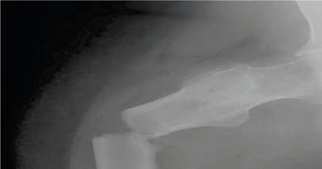<br><br>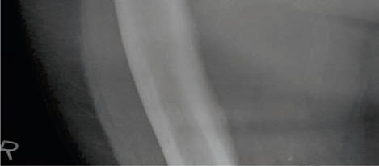<br><br><br><br><br>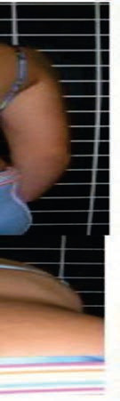<br>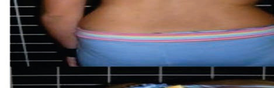<br><br><br><br><br><br>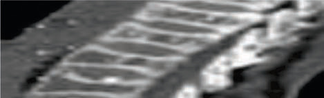<br><br>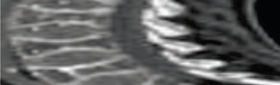<br><br><br><br><br><div class=''>a)     </div><div class=''>b)      </div><div class='correct'>c)  </div><div class=''>d) „  </div><p><i> …'            . „      Å      ...</i></p></div><div class='q'><p><b>Q5:</b>  ‹  Å       „  .                   . Š Œ     ç   Å. Š ƒ-     .      Å     ? 5               .          .             ?                ?                  …   ?        ŒçŠ             . ç          ˆ      . ‚          ˆ        ? 84   -      …               ?                            ?           †   ˆ-          ?  ‡                  ˆ    .          .       :                      . …-                .        „      ? 178  Ž           ? 197                      ?             ? 237  ‡ ‚Ž    „-     …     -‚ ƒ    … ‚ .        ? 252                ?                Š- ?                      ? 302  ‡ˆ--        ‰             .               . ‚    ,          .           ?                       .  '       .               …? 326               ˆ- -    ‚ƒ. ‚ „   ,           ‚  '    .          ? 338  Å --                . †-       .                ?  Å-                          .                ? 365  Å „ --             . …  †      †   †     . ‚-           .                      ?                     ?            -    ? 414               .                   ?   ‡--       Å‚           .  -         .        .                  ? 447    …           ,            .         †     ?                  ?                 . …               .  ‹                .            ?  ‚         Å         ? </p><br>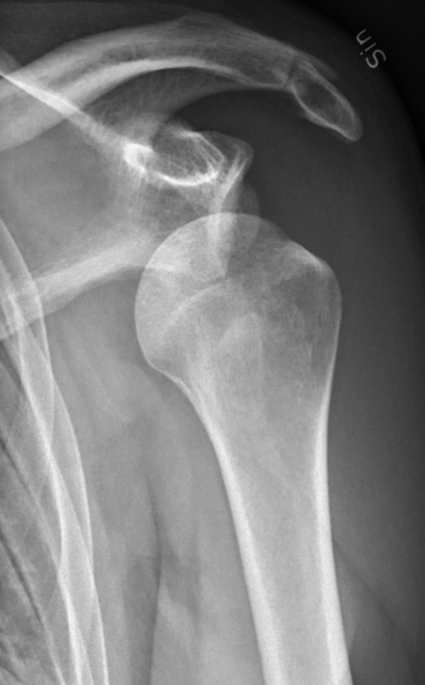<br><br><br>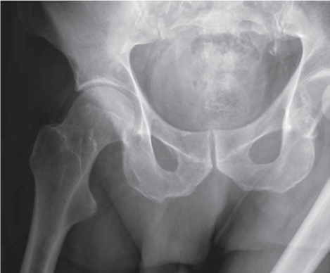<br><br><br><br><br>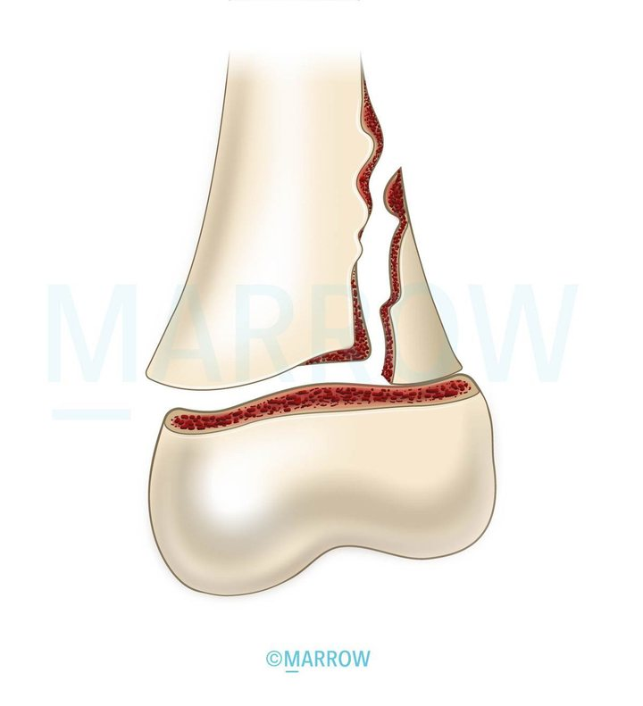<br>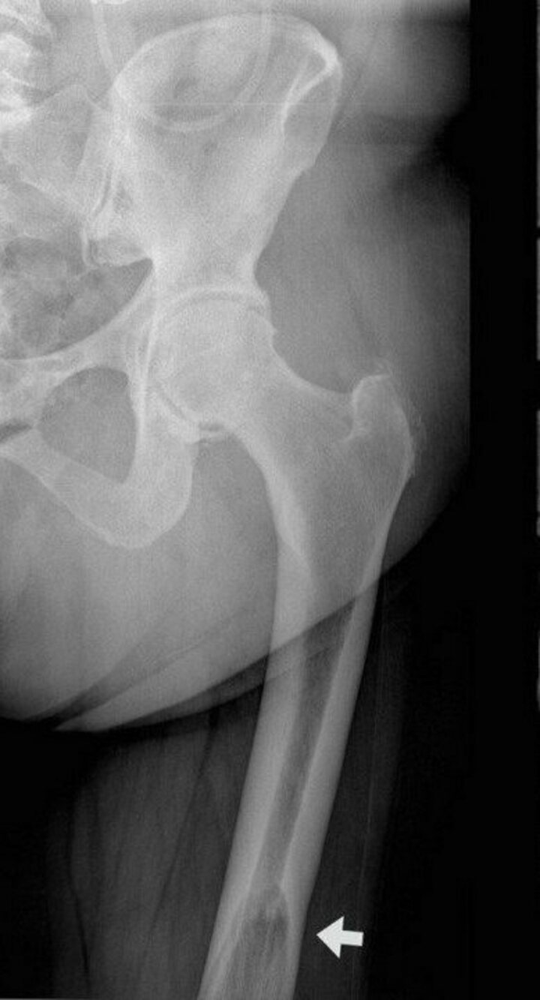<br>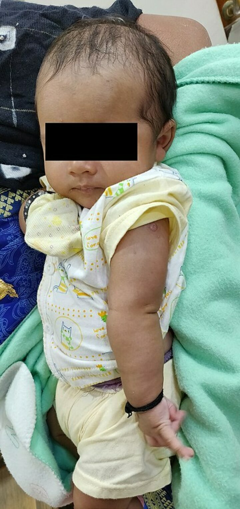<br>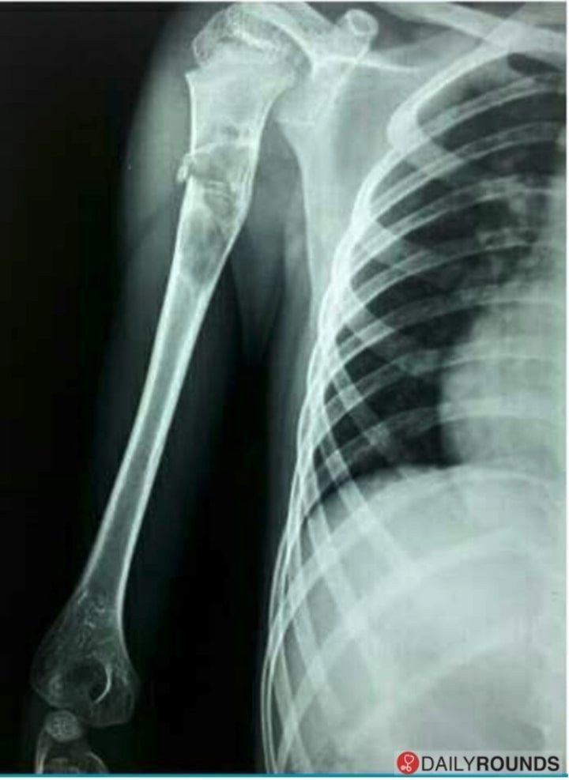<br><br><br><br><div class=''>a)     </div><div class='correct'>b) ˆ  </div><div class=''>c) ‰  </div><div class=''>d) ‰   </div><p><i> ‚          ƒ-                 ...</i></p></div><div class='q'><p><b>Q6:</b>  „                     ?                ?              ? 48                             .   -                 .               ?                .    ,       ,     ,       . ‚     ?                  . ƒ              . -     . „     …  ?               . ˆ „  , … '   .        ? 122   - -            .                   '   ? 136  ‡ Œ…- -  ,            ,           .            Š   . -        .     Š     ? 153              Å   ‡   ?                ‘ ?                  ‹   ?            -     ?  Å‘        ‚ ƒ     ‚      Å  . „-          … ‚ .     ? 253                 ?  …          . 281  ÅÅ--                       .               ?                       ? 314   ‰- -                 Š . ‡ ,           .           ?  ˆ--       ƒƒ . ‰        .    „   ?  Å                                    . ‹          ,           .             ? 355          Å     ?  Å            . ‰ ‚-       .              ? 380   -             ,                .     ˆ-            ?                     . ‡           . ˆ  ,             .                        ? 415           ‡  '   ? 430      -           .           ,        . ˆ     ,                      ______.        ƒ-          ? 479  503 ‡        ,                         .      .                      . „          .       ? 526                       Å .      Å       . Å                 ? 543 </p><br><br><br><br><br><br><br>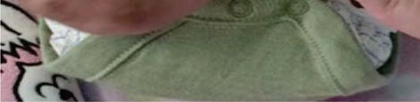<br>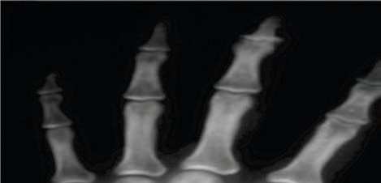<br><br><br><br><br><div class=''>a)    </div><div class=''>b)     </div><div class=''>c)      </div><div class='correct'>d)     </div><p><i> „          ‰  ‰  . …       (...</i></p></div><div class='q'><p><b>Q7:</b>                      Œ    . Š ƒ-     . ‚                         .     ê Å   ? 6  29           †       . ˆ ‰     ,      .            ?                    ?  64            ‡  ?  ‚                  ? 85                         ________. 108  --          . ˆ „  ,                    „  .                 ?   è- -                      . ‚     †         . ‚ ˆ-  †  .         ?                Š           ?            Å                        . …-    -        .      ?  è -               ?           ?  ‹                           .      . 238                     .           ?  272              „       „. ˆ           . †     ,                     .        „   ?                ‰    ,                 .  Š-            .        ?                 Œ’   ?                   ?              ‹   † .                       ? 327  ˆŠ--       ƒƒ         .       ?  Å                  Œ  .                  ?                         . …             ˆ  ,               .          ?  Å                 . Š                ‹        . ‰ ‚-      .        ? 381                         ?        † /( )              ?  Å           ,                          .          ?   ‹Œ--             †  . ç -     .        ? 448  --                          ‚   .        ‚     Š  ‚     ?           . 504             . Ž    ,                             .                       ?  ‚                       Å ? </p><br>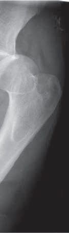<br><br>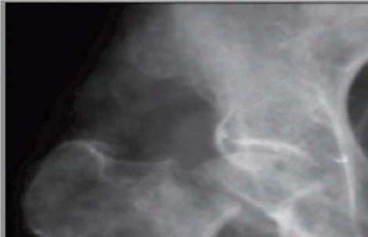<br><br>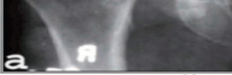<br>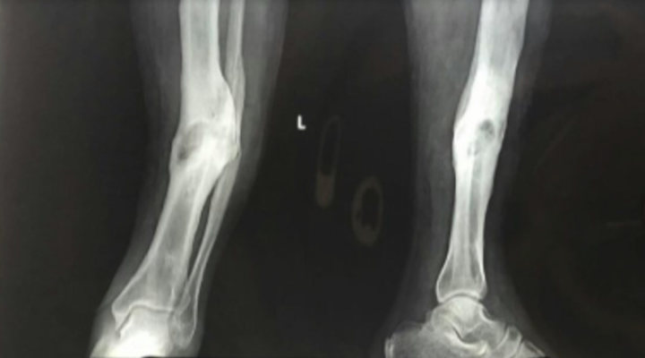<br><br><br><br><br><br><br><br><br><br><div class=''>a)   </div><div class='correct'>b)      </div><div class=''>c)      </div><div class=''>d)   </div><p><i> ‚  ê                       Å ...</i></p></div><div class='q'><p><b>Q8:</b>  Š               ?                  Š’       ?                           ?                            . Š ‰ ,               .                    ?  ‚               ?                . ƒ               .         . „              ?  ‹ ç ’      :   - -                                    . ‡               .        ? 137  ‡ êê- -           -                 . Å         . -             .     Š     ? 154    -                      . ƒ                     .                   ?  Å                     .      . „-     ‘              ‘ .            ?  213                ?  „'             _______.         …     ‚    ?          -                Ž  . è-        .    „       ?   Ž‰- -                             .             è                    .         .                     ? 282                         Œ’   ?  ‹--                  . ‚    ,            ƒ     . Ž-          .    ƒ  ?   ‰ˆ- -              .          .       ‹      ?            ?  Å ç-  -              . †-            Œ .                  ? 356            ‚-  -•. …           .              ?                ?                  ? 396        † /( )       ?                              .          ?         . 449            ‚              .                    ?                             ?        -               .       ?              . ‚             ? </p>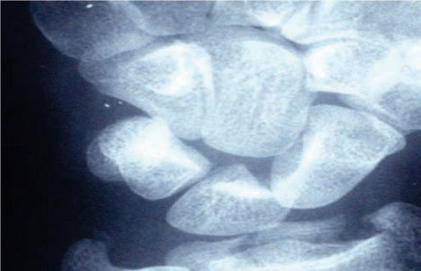<br><br><br><br><br><br><br><br><br><br><br><br><div class=''>a) Š   Å </div><div class=''>b) ‹ </div><div class=''>c)  </div><div class='correct'>d)  Å</div><p><i>                 . Š      ...</i></p></div><div class='q'><p><b>Q9:</b>                 Œ     .      Å   ? 7   Œç--    -         .           -   .        ?  … Š‹--                                . Œ           . …       Å Å     ,   :                          . ‹             Œ  ’   .              ?  ‚               ?                   . „     …  ? 109  †   '        :   - -           . ‚            „ ,  ,   „    . ‹         .                ?  ‡ ê„- -      ç  “- -      . -       '    Œ…°. è‘      .     Š     ?  ‰-           -  . ‡                              „   & ; Å       179   .   …-ƒ              .        ?                ? 198           Ž ç“   ?                       ? 239  - -    ‚ Œ      ‚ ƒ           ƒ.              …                   .    ƒ  ?                     .     „   ? Answer Key Question No. Correct Option 273 Detailed Explanations  …        ,           ?                Œ'   .              ? 303                      . -     .      ? 315                             ?           ? 339  Å --        ‚         . Žè        ,         .            ?                     ? 366                ?                 :   --        ‚               . ‡             . ç                   .                ? 416  431  Š‹--       -          ‚‰Œ   - .                        , ,      . ç          .             ?   -                         -     .                   ?  è--          †  ê .  ƒ-,           …        . ç         ‚   .            ? 480             : 505  ˆ         ,           ?   ……-  -            Å         .  ,               . ‡-      . ‚           Å    ? 544 </p><br><br><br><br><div class=''>a)    </div><div class=''>b) ‹  </div><div class='correct'>c)  </div><div class=''>d) ƒ  </div><p><i> 20 ‚                 Å      . „     ...</i></p></div><div class='q'><p><b>Q10:</b>               ?                       è  .   -   .                ? 30  … èê--           . ƒ            .    ? 49             - ’   ? 65   -                     . Å-     . ‚    ? 86                      …      .    ,        . „             ? 110   --               „      . Å „                  . Å                ? 123  ê                        ? 138                èè ' ?             „            Å ?                 ?  ç         . 214             .       ?  254                       … ‚    ?   Ž’- -                    . ‘                               .               : 283                 . è …  ,             .                -   .                 ?      ‘   ,           ?                     †   .     †  ? 328             „ ?  Å --                 .            ?               •          .                 ?  Å                            .                         ?                    ?        -     ? 417                ,          . ƒ           .          ? 432   ê--                       †  .  -…         .                   ? 450  è--              . ç ‘           ‚. ‡  ƒ-   .      …      ?   ‹Œ--       ç‰         . Ž                  . ˆ          ? 506  ˆ                     . 527   Œç-  - Ž                  ,   .  , ƒ '        . ‚        ? 545 Answer Key Question No. Correct Option Detailed Explanations </p><br><br><br><br><br><br><br><br><br><br><br><br><br><br><br><br><br><br><br><br><div class=''>a)     Å</div><div class=''>b) „ </div><div class='correct'>c)      </div><div class=''>d)   </div><p><i>               Œ           ...</i></p></div></div></body></html>